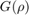
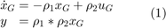
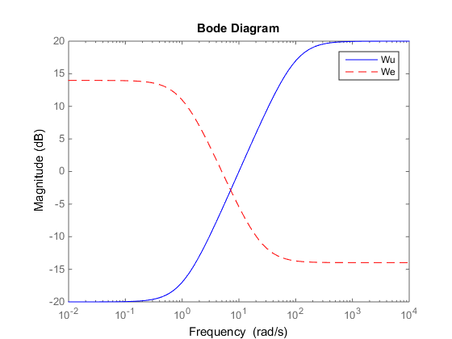
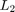

Converting between LFT- and Grid-based LPV Systems
LPVTools provides tools to convert a LFT-based LPV system into a grid-based LPV system, and vice versa. In this example we will showcase the functionality of these tools. We will utilize them to take a grid-based LPV system and transform it into LFT-based form to do control design. Finally, the LFT-based controller will be transformed into grid-based form for evaluation.
Contents
Define a Grid-Based LPV Model
We have a LPV model :

which is modeled as a grid-based LPV model using pss and pgrid objects:
% Define a time-varying real parameter. rho1 = pgrid('rho1',1:10,[-1 1]); rho2 = pgrid('rho2',1:3,[-10 10]); % Construct a grid-based LPV system: P = ss(-rho1,rho2,rho1*rho2,0);
Converting a Grid-based LPV Model into a LFT-based LPV Model
Lets transform P from a grid-based LPV system into a LFT-based system. This is accomplished using the function grid2lft, which transforms a grid-based LPV model into a LFT-based LPV model by approximating the parameter dependence of the underlying data and expressing it as a rational function of the parameter, which can then be rewritten in LFT form.
A grid-based LPV system consists of an array of state-space models, arranged on a grid of parameter values. The current implementation of grid2lft takes each element of these parameter dependent state-space matrices and finds a polynomial function of the parameter, which captures how that element changes as a function of the parameter. Once the array of state-space models has been replaced by a single state-space model whose matrix elements are polynomial functions of the parameters, it can be rewritten as a LFT.
The user can specify the desired form the the polynomial function used to fit the matrix elements. In this example we will use a polynomial of the form: (1,x,y,x^2,x*y,y^2) to fit the grid-based data.
We will use grid2lft to transform P into a LFT-based model Plft. The first argument to grid2lft is the grid-based model that will be approximated as a LFT. The second argument is the desired order of the polynomial used for the fit, in this case (1,x,y,x^2,x*y,y^2) corresponds to a second order polynomial, so we put in the number 2:
% Transfrom P into a LFT model:
Plft = grid2lft(P,2)
Continuous-time PLFTSS with 1 outputs, 1 inputs, 1 states. The model consists of the following blocks: rho1: Time-varying real, range = [1,10], rate bounds = [-1,1], 1 occurrences rho2: Time-varying real, range = [1,3], rate bounds = [-10,10], 2 occurrences
LPV Design problem
We can define the control design problem as follows:
% Define and plot weights for synthesis problem Wu = tf([10 10],[1 100]); We = tf([1 25],[5 5]); Wd = ss(0.1); bodemag(Wu,'b',We,'r--') legend('Wu','We')
Define a weighted interconnection for the synthesis problem
systemnames = 'Plft Wu We Wd'; inputvar = '[r; d; u]'; outputvar = '[We; Wu; r-Plft]'; input_to_We = '[r-Plft]'; input_to_Wu = '[u+Wd]'; input_to_Wd = '[d]'; input_to_Plft = '[Wu+u]'; Gweights = sysic
Continuous-time PLFTSS with 3 outputs, 3 inputs, 3 states. The model consists of the following blocks: rho1: Time-varying real, range = [1,10], rate bounds = [-1,1], 1 occurrences rho2: Time-varying real, range = [1,3], rate bounds = [-10,10], 2 occurrences
LFT-based LPV Synthesis
We will use lpvsyn to synthesize the LFT controller:
% Perform LPV design with LFT approach
nmeas = 1;
ncont = 1;
[Klft,GammaLFT] = lpvsyn(Gweights,nmeas,ncont);
The LFT-based controller Klft is guarenteed to acheive a induced  norm of GammaLFT:
GammaLFT
GammaLFT =
4.8339
Convert LFT-Based System to Grid-Based System
We can transform the LFT controller into a grid-based LPV controller. This is accomplished using the lft2grid function. The process of transforming a LFT based system into a grid-based LPV system is simple: First, pick a desired grid of parameter values for the resulting grid-based system. Second, evaluate the LFT-based system at each grid point by replacing the time-varying parameter in the LFT, with a parameter values at each grid point. The resulting array of state-space models and assocaited grid of parameter values constitutes a grid-based LPV model approximation of the LFT-based model. Lets transform Klft into a grid-based LPV system.
% We will use the parameter grid from the original system P
Domain = P.Domain;
% Transform Klft into a grid-based LPV system:
Kg = lft2grid(Klft,Domain)
PSS with 3 States, 1 Outputs, 1 Inputs, Continuous System. The PSS consists of the following blocks: rho1: Gridded real, 10 points in [1,10], rate bounds [-1,1]. rho2: Gridded real, 3 points in [1,3], rate bounds [-10,10].
We transform the weighted interconnection Gweights into grid-based model, and compute the induced norm achieved by the grid-based version of the controller:
% Transform the weighted interconnection into a grid-based system
GweightsGRID = lft2grid(Gweights,Domain)
PSS with 3 States, 3 Outputs, 3 Inputs, Continuous System. The PSS consists of the following blocks: rho1: Gridded real, 10 points in [1,10], rate bounds [-1,1]. rho2: Gridded real, 3 points in [1,3], rate bounds [-10,10].
% Closed the loop around the controller and the weighted interconnection:
WeightedCL = lft(GweightsGRID,Kg)
PSS with 6 States, 2 Outputs, 2 Inputs, Continuous System. The PSS consists of the following blocks: rho1: Gridded real, 10 points in [1,10], rate bounds [-1,1]. rho2: Gridded real, 3 points in [1,3], rate bounds [-10,10].
% Compute the induced $L_2$ norm:
GammaGrid = lpvnorm(WeightedCL)
GammaGrid =
2.4102
The induced norm computed for the grid-based version of the controller is substantially lower than the induced norm computed for the LFT version. There are a few issues that can explain this. First, the computed induced norm is in both cases only an upper bound, hence the results are not inconsistent. Second, the LFT-based LPV model is a smooth function of the parameter, and includes every intermediary parameter value between the grid points in Domain (the grid of parameter values which underlies the grid-based LPV model). The dynamics at these intermediary points was approximated from the existing grid-based model. Hence, if this approximation is inaccurate, the LFT-based analysis will be taking into account dynamics that are not really there.